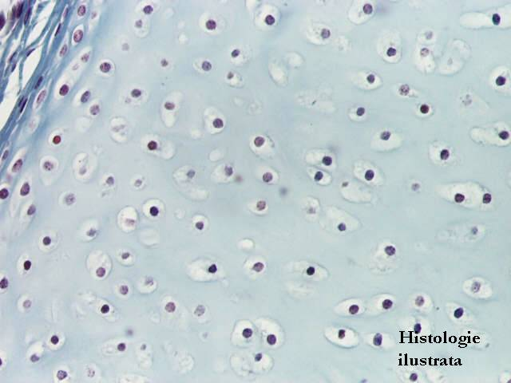
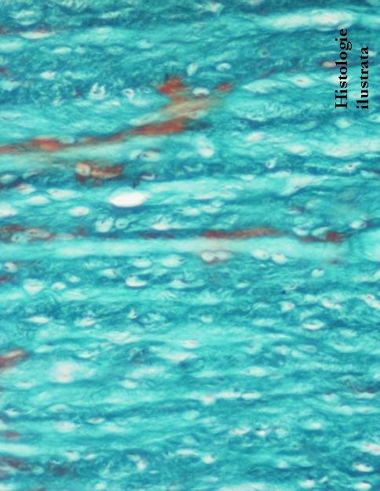

Chap.2 - Tissu conjonctif
2.2. Variétés de tissu conjonctif
Tissu conjonctif spécialisé - Tissu cartilagineux



Fig. 94 - Tissu cartilagineux hyalin – trachée, T.S. X 40
Fig. 95 - Tissu cartilagineux hyalin – périchondre (p), trachée, H.E. X 400
Fig. 96 - Tissu cartilagineux hyalin – chondroblastes (cb.) et chondrocytes en séries isogéniques coronaires (c.), trachée, H.E. X 400
Fig. 97 - Chondrocytes dans les chondroplastes – cartilage hyalin, trachée, T.S. X 400





Fig. 98 - Chondrocytes dans les chondroplastes – cartilage élastique, orcéine X 400
Fig. 99 - Tissu cartilagineux fibreux – T.S. X 100